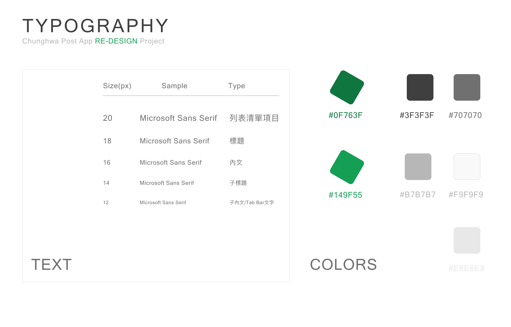

Description
2021年
這個side-project，針對中華郵政的「e動郵局」App (v4.65)進行重新設計，主要優化項目包含「介面架構重塑」與「介面設計」。
背景：想要一個更友善的中華郵政app
在學生時期(約莫2012年左右)，因為經濟能力有限，無法申辦銀行信用卡，而彼時的網路購物正在興起，為了方便線上刷卡結帳，故申辦了中華郵「Visa金融卡」，自此成為中華郵政的金融服務的忠實客戶。
隨著網路行動銀行的普及化，UI設計的風格從skeuomorphism(擬真化)，演化至flat design(扁平化設計)，近幾年也出現了neumorphism、glassmorphism等新潮的設計風格，逐漸覺得中華郵政的「e動郵局」app的設計風格稍嫌過時。
除了介面的設計感之外，中華郵政之於我來說，除了金融服務之外，另一個重要的價值在於「可靠的郵務服務」，而「物流」則是近幾年的經濟紅海， 在參考了7-11與全家的物流服務使用介面之後，深覺中華郵政需要一個更友善的郵政服務介面。基於這幾個原因，我便著手進行了這次的side-project。
Step 1. Persona
我將自身的背景與使用需求，畫作一份Persona。好處在於，我能夠基於這份Persona，更理性地從客觀的角度的去洞察使用者的需求，彷彿是在看待另一個使用者一般。
Step 2. Mental Model
由於「e動郵局」的服務項目繁多，我根據了Persona，擬定出根據該類型的使用者最常使用的服務，並將其製作為mental model，將使用者的心理需求模型與系統功能相對應， 試圖找出須改善的接觸點，我將其需求模型分為兩大類：
1. 金融服務：每月收到薪資後會進行的房租、繳費、轉帳與存款等需求，也包含不定時的行動金融或支付服務;
2. 郵務服務：因為住在外地，時不時需要與老家或異地的朋友之間寄收物品。
Step 3. 設計
1. Typography
2. 登入頁面
現行的登入介面
re-design
re-design的選單開啟

登入介面總共進行兩項調整：
1. 階層調整：原先的登入介面並非開啟app後的預設頁面，研判是因為中華郵政app的功能服務對象不僅限於會員，但會員制的好處在於， 可以透過會員資料的綁定，而提供更多客製化(customize)的服務。因此，我將登入畫面調整為第一頁，也在左上角保留menu的按鈕， 讓未登入的使用者，仍可以訪問其他功能(上方右圖);
2. 生物辨識登入：原先的「快速登入」即是「生物辨識登入」，只是在視覺上，設計得不夠直覺易懂，因此加以改進;
3. 首頁
現行的首頁
re-design
首頁(index)設計說明：
1. 快速功能：將常用的金融服務功能放在頁面的上方，方便使用者快速訪問;
2. 資訊總覽：將主要的兩項功能「金融」與「郵務」兩項的服務資訊，以總覽的方式呈現在畫面中間;
3. Tab Bar：選單中，將此project設定的主要兩大功能以外的其他功能，都放進「更多」的頁面當中。
4. 個人金融頁面
現行的頁面
re-design
re-design 帳戶細節頁面
個人金融頁面設計說明：
1. 分類：將台幣與外幣帳戶分類，以Segmented Controls的方式進行切換;
2. 快速功能樣式：原先的「未登摺明細」、「轉帳」、「繳費」、「無卡提款」四個快速功能，與tab bar樣式過於混淆， 在此將其修改為更突出的按鈕樣式，使用者可以更明顯的分辨之;
3. 帳戶明細：我將「未登摺明細」的功能放進金融項目類別(定存與活存)裡面，一進到每個類別項目中， 即可使用快速查詢(今天、近七天、近一個月或自訂查詢範圍)看到該帳戶明細 (請見上方右圖)。
5. 個人郵務頁面
現行的頁面
re-design郵務頁面(已取貨)
re-design郵務頁面(未取貨)

re-design郵務詳細資訊

個人郵務頁面設計說明：
1. 查詢功能：原先的郵務查詢頁面，會跳出app，將使用者導入到瀏覽器，以10碼以上的貨號查詢貨物狀態， 我在此將search bar放在郵務頁面的最上方，並於右側加入QRcode掃描功能的按鈕，更便利於使用者進行查詢;
2. 分類：針對國內與國際郵件查詢，歸納為「收件」與「寄件」。Demo頁面為「收件」類別， 並且，再繼續細分為四種貨物狀態-「已寄出」、「已取件」、「未取件」、「已取消」，方便使用者查看不同狀態下的郵務清單;
3. 郵務明細：郵務清單中可以看到「日期」、「寄件人」、「內容物」、「收件地址」、「貨號」、「狀態」等六項資訊， 訪問清單項目後，則可以看到該貨物的郵寄流程;
4. 自動綁定：此郵務頁面的設計，是假設在不用輸入個別貨號，便可自動帶入與使用者相關的郵務資訊， 必須配合「以使用者的帳號、手機號碼或姓名進行資料關聯」，若要實踐此頁面的設計，則有很大的可能必須修改中華郵政現行的資料庫結構。
6. 更多功能
現行的頁面
re-design
更多功能頁面設計說明：
1. 樣式設計：將樣式調整為以icon為主的按鈕樣式，營造更活潑與輕量化的頁面設計;
2. 功能分類：將相近的功能進行分類，除了方便查找之外，更有利於建立試用者的「系統印象」。
後記
挑戰
在我納悶「為何原本的app預設頁面不是登入頁面？」這個問題時，我才發現，或許中華郵政是秉持「服務所有人」，而不只是「服務我的顧客」， 而讓使用者在無登入的狀態下，仍能使用「不牽涉到使用者資訊」的所有功能。也因此，讓我在思考「登入頁面」的優先性時，造成很大的困擾與掙扎。最後，我在登入頁面的左上角， 放上了訪問所有服務的選單按鈕，希望能以此保留中華郵政「服務所有人」的理念。
總結
中華郵政一直以來，提供了大眾相當值得信賴的金融與郵務服務，並隨著日漸多樣化與更為追求便利的需求，不斷開發更多樣的功能， 此次，我僅是嘗試將這些功能與使用者之間的連結-也就是「介面」與「使用流程」進行了一次檢驗與重新設計。
或許明早醒來，仍會發現許多不足之處，若是這樣，則讓我繼續進步。